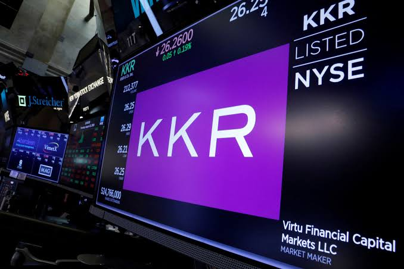

Breaking News
 August 31
August 31
by James Thornton
Aon is reportedly close to acquiring USI Insurance Services from KKR for about $17 billion including debt, in a major expansion of its insurance brokerage business
Aon is in discussions to purchase insurance broker USI Insurance Services from KKR in a transaction valued at approximately $17 billion, including debt, according to the Wall Street Journal - Reuters. If the talks are successful, the deal could be announced as early as Monday. The potential deal would be a big expansion of Aon’s insurance brokerage business, especially in the middle market space. It would also mark another high-profile exit from KKR, which has pumped money into USI since buying the company alongside Canadian pension fund CDPQ in 2017. But the deal isn't done yet. Reuters could not immediately verify the Wall Street Journal report independently. Aon and USI did not immediately respond to requests for comment. KKR had no comment.
The deal being announced is valuing USI at about $17 billion including debt and is one of the largest transactions in the insurance brokerage industry in recent years. USI is a business and individual insurance brokerage and consulting firm. USI is a midsize business with a large footprint, based in Valhalla, N.Y. The Wall Street Journal reported that the company has roughly $3 billion in annual revenue. For Aon, USI would be a nice bolt-on in the middle market and would add scale to the brokerage business. The deal would also bolster Aon's recent growth strategy to expand through acquisitions, including its $13 billion purchase of NFP, another large middle-market insurance broker, which closed in 2024.
KKR bought USI in 2017 along with Canadian pension fund Caisse de dépôt et placement du Québec, better known as CDPQ. The companies acquired USI from Onex Corporation for about $4.3 billion, including debt. KKR then put more than $1 billion into the business, making it the biggest shareholder. Should USI be sold for approximately $17 billion, it would be a material uplift to the reported enterprise value of USI relative to KKR’s initial purchase. The possible deal would be the latest of a series of big exits for KKR. Recent divestitures include CoolIT, its data-center cooling business, and Circor’s commercial and defense aerospace unit. KKR has continued to pursue big private-equity deals, benefiting from the upside of mature investments in a variety of industries.
The acquisition would strengthen Aon’s ability to serve midsize businesses, a growing segment of the insurance market. USI offers services in commercial insurance, employee benefits, risk management and related consulting activities. A combination could give Aon a bigger client base and help it scale up its middle-market business. The deal also fits with a wider consolidation trend in insurance brokerage, where large companies have looked to acquisitions to expand their geographic footprint, client relationships and bargaining power. Aon’s acquisition of NFP was a sign of the firm’s interest in the space. Adding USI would bolster that strategy and could give Aon one of the largest middle-market platforms in the industry.
The proposed acquisition also could be financially beneficial to Aon. The Wall Street Journal, citing Reuters, said the deal could boost Aon’s earnings per share as early as 2028. The expected earnings contribution would depend on the final purchase price, the financing structure, integration costs and the performance of USI post acquisition. Aon would also acquire USI’s staff, technology systems and client operations and continue relationships with insurance carriers and customers. Large acquisitions by insurance brokerages can bring economies of scale, but they also have execution risks.
The potential USI deal is a reflection of a broader shift toward consolidation in the global insurance brokerage industry. Acquisitions are now the favored path for large brokers wanting to enter new markets or build up specialized capabilities. Insurance brokerage firms are attractive acquisition targets because they have recurring commission and fee income and do not have the same underwriting risk as insurance carriers. Scale also gives brokers more power in negotiations and a wider range of services to corporate clients. Aon’s announced deal to acquire USI would therefore be part of a broader push to build larger, more diversified insurance-services platforms.
KKR, which has owned the company for nearly a decade, would get an exit through the possible deal. The private-equity firm built its stake in USI through its initial purchase and then subsequent investment. The reported $17 billion valuation would be a significant increase from the $4.3 billion purchase price in 2017, though the final economic upside would be contingent on the company’s capital structure, additional investment and the ultimate terms of the deal. The deal would also signal continued appetite among strategic buyers for large insurance brokerage platforms.
If the talks can be successfully concluded, an agreement could be announced as soon as Monday, the Wall Street Journal said. That means the deal is not done and could change or fall through. More talks still lie ahead. Neither Aon nor USI has publicly confirmed the takeover, and KKR declined to comment, according to the latest reports. Reuters was not able to independently confirm the Wall Street Journal report. So investors will be looking for an official announcement and details on the price to be paid, the financing and the expected financial impact.
If it goes ahead, the deal would raise Aon’s insurance brokerage market share and also give it a bigger footprint among midsize businesses. It would also build on the company’s large acquisition strategy, a strategy it has been following since NFP. The deal would be another big portfolio exit for KKR after years of investing in USI. The deal, reported to be worth $17 billion, still has to go through final negotiations, but if it goes ahead it would be a major deal in the insurance industry and would further speed up consolidation among the large global insurance brokers.

James Thornton is a U.S. business reporter covering markets, technology, and economic policy.